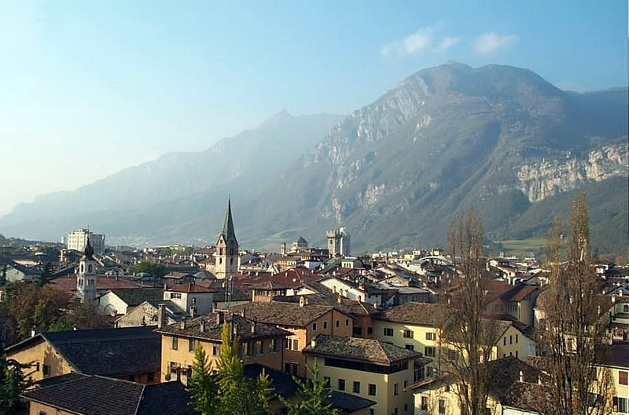
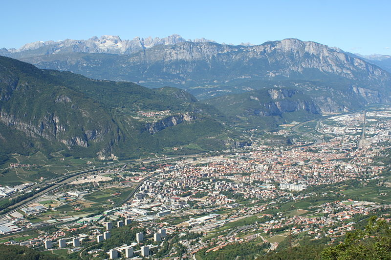
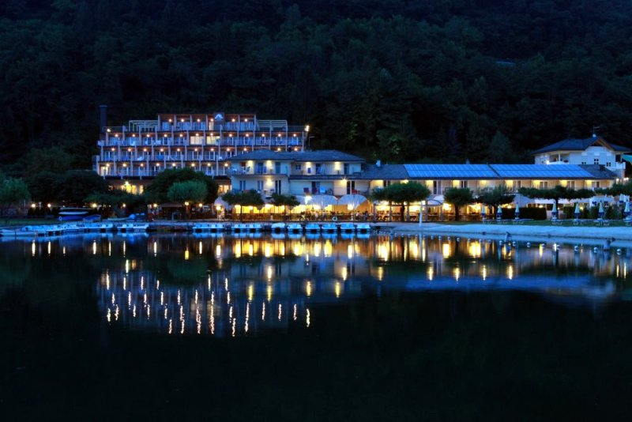
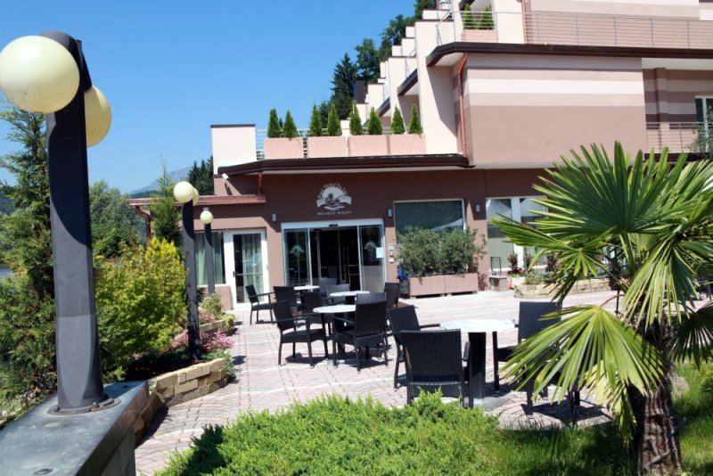
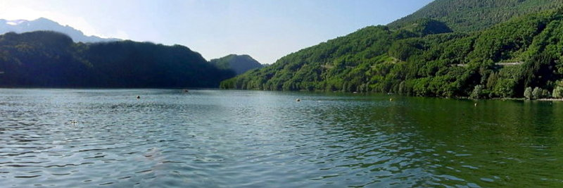

Trentino
heißt die Autonome Provinz Trient, italienisch
"Provincia Autonoma di Trento". Diese Provinz im Norden Italiens bildet
zusammen mit Südtirol die Region "Trentino-Südtirol".
Die Hauptstadt Trient hat 117.065 Einwohner und
heisst Trento auf Italienisch. Das Trentino ist Teilmitglied der
Europaregion "Tirol-Südtirol-Trentino", die im Wesentlichen
dem Gebiet des Kronlandes Tirol der früheren
Österreichisch-Ungarischen Monarchie entspricht.
1918: Südtirol wurde von italienischen
Truppen besetzt. Nach dem Waffenstillstand vom 3. November 1918
zwischen Österreich-Ungarn und Italien und dem Vertrag von
Saint-Germain im Jahre 1919 zwischen den Siegermächten des
Ersten
Weltkrieges fiel Südtirol an das Königreich Italien.
Heute bildet Südtirol gemeinsam mit der Provinz Trentino die
autonome Region Trentino-Südtirol und seit dem
Südtirol-Pakt von 1972 genießt die
nördlichste Provinz Italiens umfassende
Selbstverwaltungsrechte. Ihre Landeshauptstadt ist Bozen bzw. Bolzano
auf Italienisch.
Über Annektierungen in der Geschichte: Das Wort Annektierung
oder
Annexion stammt von dem lateinischen Wort annecter ab und kann mit
anknüpfen, anbinden übersetzt werden. Die
Annektierung ist
eine erzwungene, wiederrechtliche und oft gewaltsame Eingliederung
eines fremden Staatsgebietes. Annexionen haben in der Geschichte immer
wieder stattgefunden. Bis Anfang des 20. Jahrhunderts war die
Annektierung fremden Staatsgebietes bei kriegerischen
Auseinandersetzungen für den Sieger völkerrechtlich
geduldet, es gab aber diverse Tricksereien für die Einverleibung von
ausländischen Gebieten, wie z.B. bei der Annexion der Hawaii
Inselgruppe, als die dorthin delegierte US-Armee abstimmen
durfte.
Seit 1945 ist die Annexion völkerrechtlich zwar verboten, es wurden aber
diverse Ländereien in andere Länder verschoben - wie die
Halbinsel Istrien an Kroatien und dafür gab Slowenien die
südliche Hälfte der Stadt Triest an Italien - ein fauler Ringtausch,
wobei Slowenien nicht gefragt, Istrien und die halbe Stadt
Triest abgeben musste und Kroatien umsonst die Halbinsel
Istrien bekam - vom kroatischen Tito so geregelt. Auch per Dekret wurden ganze
Landschaften verschoben, so z.B. aus Russland in die
Ukraine durch den ukrainischstämmigen Sowjetpräsidenten Chruschtschow - und 50 Jahre
später motzt die westliche Welt, wenn die Russen die Nase voll
haben von der Jahrzehnte lang andauernden
Rassendiskriminierung (=Ukrainisierung) im eigenen Land.
Andere Ethnien, wie Polen und Ungarn wagen es nicht, sich gegen die ukrainische
Diktatur zu erheben, auch wenn sie rassistisch unterdrückt
werden und die EU schweigt dazu. Ähnlich erging es den Ungarn und Deutschen in Rumänien,
nachdem der Diktator Ceausescu ihr im Jahre 1920 international
zugeteiltes Autonomiegebiet im Jahre 1960 national, durch
einen parlamentarischen Beschluss abschaffen ließ.
Seit dem Vordringen der Bajuwaren ins Alpengebiet im 6.
Jahrhundert bis
zum Vertrag von Saint-Germain im Jahre 1919 sprach man hier
an der Grenze von bayerisch-langobardischen Siedlungsgebieten
fast ausschließlich Deutsch, die Zahl der Einwohner der Stadt
Trient
betrug
damals rd. 20.000, heute sechsmal so viel. Italienisch setzte sich durch die rassistisch
gelenkte Siedlungspolitik Mussolinis durch und trug auch dazu bei, Ladinisch
zurückzudrängen. Dadurch ist das
früher dünn besiedelte Trentino heute - im Unterschied zu
Südtirol - ein überwiegend italienisch und ladinisch besiedeltes
Gebiet. Ladinisch ist ein Kapitel für sich, über dessen Ursprung sich die
Gelehrten heute uneinig sind. Es gibt nur noch rd. 30.000
Bürger in drei Gemeinden, die Ladinisch als ihre Muttersprache
bezeichnen (Stand: 2015).
Die einen wollen sie in die italienische Sprachgruppe
einordnen, andere zu den Rhätoromanen, die in der Schweiz noch
immer eine größere Sprachgruppe bilden.
Die als
Trentino bekannte autonome italienische Provinz bildet gemeinsam mit
Südtirol
die Urlaubsregion Trentino-Südtirol. Trentino ist ein wichtiges
Urlaubsgebiet, unser Ziel Levico Terme liegt
knapp 10 km südöstlich von Trient. Wandern in den
Bergen,
Erholung, Wellness oder eine Thermalkur in Trentino ist hier angesagt.

Trient - die Hauptstadt des
Trentino
Hauptstadt
des Trentino ist Trient, eine Stadt mit einer ruhmreichen
Vergangenheit, von der noch heute Bauwerke wie der Palazzo Pretorio
oder das
Castello di Buon Consiglio, die einstige Residenz der
Fürstbischöfe zeugen. Ihr
lombardisch-romanischer Dom stammt aus dem 11. und 12. Jahrhundert und
in der
mit herrlichen Fresken geschmückten Kirche Santa Maria
Maggiore fanden im 16.
Jahrhundert die berühmten Sitzungen des Tridentinischen
Konzils statt.

Trient und das Brenta-Massiv
Nordwestlich
von Trient befindet sich das mit breiten, grünen
Tälern
durchzogene Brenta-Massiv, in dem sich weltbekannte Wintersportorte wie
Madonna
di Campiglio aber auch malerische Seen wie der Lago di Molveno
befinden.
Südlich
davon ragt die Nordspitze des Gardasees in die Region Trentino hinein.
Hier werden die Ufer von Italiens größtem See von
über 2.000 Meter hohen
Bergen, wie dem Monte Baldo gesäumt, während Riva del
Garda die größte und wohl
eine der schönsten Städte am Gardasee ist. Wer hier
beispielsweise im Parc
Hotel du Lac, einem
Hotel mit riesigem Garten, Swimmingpool und direktem Seezugang, seinen
Urlaub
verbringt, der kann nicht nur die gut erhaltenen Teile der alten
Befestigungsanlage kennenlernen, sondern auch Bekanntschaft mit dem
leicht
schiefen Uhrturm aus dem Jahr 1220 oder mit der Stadtburg Rocca di Riva
schließen.

Parc Hotel du Lac
Parc Hotel
du Lac - Das Kur- und Wellnesshotel befinet sich in
Levico Terme, direkt am See Levico. Wer das
noch nicht weiss: Levico Terme ist ein Kurort mit rd. 7.500 Einwohnern
und hiess früher Löweneck.

Die
östliche Region des Trentino reicht im Norden in die Bergwelt
der Dolomiten
hinein und schließt mit der Marmolata ihren mit 3343 Metern
höchsten Gipfel
ein, der den einzigen größeren Gletscher der
Dolomiten auf seinem Rücken trägt.
Vor allem im Winter stellt der über eine Seilbahn erschlossene
Berg ein
beliebtes touristisches Urlaubsziel dar. Zu diesen gehören
auch die in der Nähe
befindlichen Wintersportorte San Martino di Castrozza und Predazzo.

Parc Hotel
du Lac - Das sommerliche Panoramabild wurde
vormittags aus dem Wellnesshotel
aufgenommen und das winterliches Bild
zeigt den Levico See etwas weiter nördlich. Sie
charakterisieren die Ruhe am Levico See. Erholung,
Wanderung und Wellness sind hier angesagt - eventuell auch ein Shopping
mit Stadtbummel in Trient bzw. Trento in nur 10 km Entfernung.
Wer seinen Urlaub gerne in einem familienfreundlichen Camping
kostengünstig verbringen oder sogar besondere Aktivitäten entfalten
möchte, ist am Levico See in Trentino gerade richtig:
Kulturell
interessante Unterhaltungsmöglichkeiten gibt es hier am laufenden
Band. Ein Höhepunkt solcher Veranstaltungen stellte der Auftritt von
André Rieu.Der Orchesterleiter
heizt die Stimmung auf:
Der FC Bayern im Sommer 2012 mit
Jupp Heynckes in Trentino:
Im Sommer 2013 kam der FC Bayern zum
fünften Male nach Trentino - nun mit Pep Guardiola
Trentino ist auch im Winter
ein Sportgebiet. Die Weltelite der Skirennläufer
trifft sich hier alljährlich vor Weihnachten. Diverse
Weltcup-Finalentscheidungen in Riesenslalom werden in Alta Badia
oder der große Klassiker in Madonna di Campiglio auf einem
traumhaft schönen Hang ausgeführt. Die Schneekanonen haben sich
bisher immer bewährt, wenn das Wetter nicht
mitmachen wollte.
Die Nordspitze des Gardasees
ragt in die Region Trentino hinein und liegt vielleicht 40 km
südwestlich von unserem Erholungsort Levico Terme.
Italiens größter See ist umgeben von
über 2.000 Meter hohen
Bergen, und Riva del
Garda ist eine der schönsten Städte am Gardasee.
Die
östliche Region des Trentino reicht im Norden in die Bergwelt
der Dolomiten
hinein und schließt mit der Marmolata ihren mit 3343 Metern
höchsten Gipfel
ein,
der den einzigen größeren Gletscher der
Dolomiten auf seinem Rücken trägt.
Vor allem im Winter stellt der über eine Seilbahn erschlossene
Berg ein
beliebtes touristisches Urlaubsziel dar.
Die beliebteren Wintersportorte hier sind San Martino di Castrozza und
Predazzo.